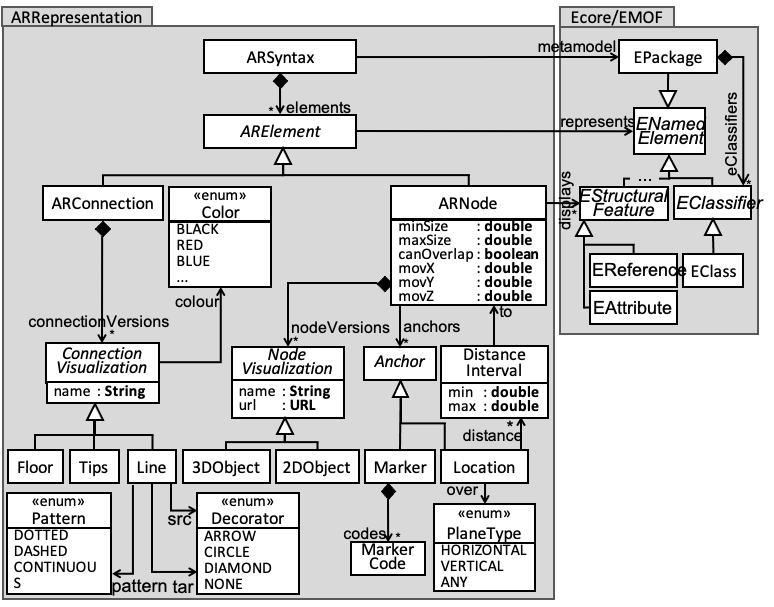
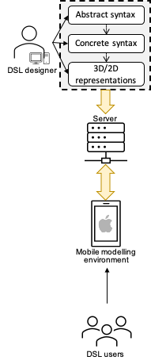
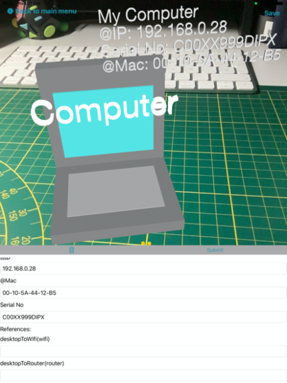

AlteR
An iOS domain-modelling editor in 3D.
Modelling using AR. Enhance your modelling experience.
Modelling aims at capturing the essence of a system for a specific purpose. Traditionally, it has been performed either manually (with pen and paper or whiteboards) or supported by tools via desktop computers or laptops. However, the improvement of the capabilities in mobile devices (like their computer power, touch screen size and components like cameras) has triggered the emergence of environments for modelling on them.
With AlteR, we go one step further from current mobile modelling environments, by proposing the use of DSLs
enhanced with augmented reality (AR) within mobile devices. Hence, the user will be able to create domain-specific models using the device.
However, instead of placing the objects on a blank canvas, the camera is used to place the objects (virtually) within the user surroundings, using AR.
AR-based DSL. A specific concrete syntax for every domain meta-models.
An AR-based DSL requires the definition of an AR-based concrete syntax. That is why we have defined the meta-model of the figure on the right which permits defining AR-based syntaxes by annotating the domain meta-models that describe the abstract syntax.
Our AR-based syntax distinguishes both nodes (class ARNode), which corresponds to EClass in the domain meta-model, and connections (class ARConnection), which is EReference in the domain meta-model.
An ARNode has a set of visualization versions (either 2D or 3D) and has an anchor which can be markers (QR codes) or a location which has to follow some constraints (given plane surface, or a certain distance with other nodes).
Meta-model for AR-based concrete syntaxes.
An ARNode also define constraints on how to interact with it (overlapping prevents two objects to be place one over the other, controlling the resizing of an object or establishing a perimeter for moving the virtual object).
An ARConnection is a visual representation of a reference between instances of classes of the domain meta-model. It can have different versions and colors:
Lines are displayed as floating lines between two related objects, with decorations in the source and target ends,
Floors display a reference as a path to follow in the floor from the source to the target object,
Tips display arrows on the side of the camera steering the position of the target node, mimicking some first-person shooter games.
AlteR. (domAin modeLling using augmenTEd Reality)
AlteR is a native iOS app which is using the technology ARKit
for creating and manipulating AR-based domain-specific languages (DSL).
On his computer the DSL developer will define:
an abstract syntax of the domain meta-model,
an AR concrete syntax,
2D or 3D visualization objects.
Currently, the syntaxes have to be serialized in JSON and the 3D/2D graphics have to use the Apple's SceneKit Scene (SCN) format. These files will be stored on a web server.
The DSL users will access the list of meta-models from the server via their iPhones and iPads using AlteR
and they will select the meta-model of their choice, retrieve it along with the associated AR syntax and visualization objects, and they will be able
to start modelling and placing an element in the real world.
Architecture of AlteR.
Modelling. An AR Editor
The screenshot on Fig.1 is the AlteR editor canvas. It shows the main screen of the mobile app.
Label 1 corresponds to the list of nodes that can be placed in the real world and are named after the classes of the meta-model.
Label 2 points at a 3D node and depicts the list of interaction available:
Tap is used to place an item at the tapped location after selecting one in the list of Label 1,
Swipe allows to change the visual representation of a node if there are different one for the same ARNode,
Pinch permits to resize an item,
Long press an item will display its attributes and allows to edit them, add connections, or to delete the item as shown in Fig.2,
Pan moves the node in the world and change its position.
Label 3 shows the displayed attributes of a node as a key-value list.
Label 4 points at a line connecting two nodes, which represents a reference between two model objects. A connection can be set via the menu of the attributes view (see Fig.2).
There are two buttons at the top to either save the model (Label 5) in order to work on it again later or to quit de modelling session (label 6).
Note that when a virtual object is created, an anchor is positionned at the tap location which is relative to the established world origin and its node representation is attached to this anchor. When the model is saved, the world origin, a snapshot of the current position and the anchors along with all the data about their nodes are serialized. When a previous model is loaded, the saved anchors are placed at their previous position as soon as the camera is pointing the same location of the snapshot.
Finally, as mentioned earlier, Fig.2 shows the menu that display the attributes and references of a selected node and permits to modify it or delete it.
Videos illustrating these features are available in Demo.
Fig.1 - Main canvas of AlteR.
Fig.2 - AlteR's attributes view.